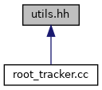

#include <iostream>#include <eigen3/Eigen/Dense>#include <gsl/gsl_linalg.h>#include <math.h>
Include dependency graph for utils.hh:

This graph shows which files directly or indirectly include this file:

Go to the source code of this file.
Functions | |
| VectorXd | linearSolve (MatrixXd Amat, VectorXd bvec) |
| VectorXd | s1Dist (VectorXd theta1, VectorXd theta2) |
Function Documentation
◆ linearSolve()
| VectorXd linearSolve | ( | MatrixXd | Amat, |
| VectorXd | bvec | ||
| ) |
The linearSolve function is a simple, usable wraper around the GSLs linear solver using the Eigen library.
- Parameters
-
Amat Input matrix bvec Input vector
- Todo:
- Add assertions for square matrix verification and verification of sizes of A and b
◆ s1Dist()
| VectorXd s1Dist | ( | VectorXd | theta1, |
| VectorXd | theta2 | ||
| ) |
The s1Dist returns the distance between two elements in the S1 space.
- Parameters
-
theta1 First element theta2 Second element
- Todo:
Can do more effecient computation if the angles mapping is saved in the memory
Assert sizes of theta1 and theta2 to be same